── Conflicts ────────────────────────────────────────── tidyverse_conflicts() ──
✖ dplyr::filter() masks stats::filter()
✖ dplyr::lag() masks stats::lag()
ℹ Use the conflicted package (<http://conflicted.r-lib.org/>) to force all conflicts to become errors
Warning: package 'broom.mixed' was built under R version 4.5.2
library(dotwhisker)library(Metrics)
Attaching package: 'Metrics'
The following objects are masked from 'package:yardstick':
accuracy, mae, mape, mase, precision, recall, rmse, smape
library(yardstick)library(corrplot)
corrplot 0.95 loaded
library(glmnet)
Loading required package: Matrix
Attaching package: 'Matrix'
The following objects are masked from 'package:tidyr':
expand, pack, unpack
Loaded glmnet 4.1-10
library(ranger)
Warning: package 'ranger' was built under R version 4.5.2
library(tidytuesdayR)
Warning: package 'tidytuesdayR' was built under R version 4.5.2
library(kernlab)
Attaching package: 'kernlab'
The following object is masked from 'package:dials':
buffer
The following object is masked from 'package:scales':
alpha
The following object is masked from 'package:purrr':
cross
The following object is masked from 'package:ggplot2':
alpha
Load in data - instructions from the tidytuesday github README file
---- Compiling #TidyTuesday Information for 2026-04-14 ----
--- There are 4 files available ---
── Downloading files ───────────────────────────────────────────────────────────
1 of 4: "beaufort_scale.csv"
2 of 4: "birds.csv"
Warning: One or more parsing issues, call `problems()` on your data frame for details,
e.g.:
dat <- vroom(...)
problems(dat)
# A tibble: 6 × 21
record_id date time latitude longitude hemisphere activity speed
<dbl> <date> <time> <dbl> <dbl> <chr> <chr> <dbl>
1 1083001 1975-10-15 14:00 -45.9 165. E steaming, sai… 15
2 1084001 1975-11-03 13:10 -35.5 125 E steaming, sai… 14
3 1084002 1975-11-04 14:20 -37.7 132. E steaming, sai… 14.5
4 1084003 1975-11-08 16:15 -40 162 E steaming, sai… 14.6
5 1086001 1975-11-16 12:30 -36.2 175. E steaming, sai… 15
6 1086002 1975-11-16 15:30 -35.4 175. E steaming, sai… 15
# ℹ 13 more variables: direction <dbl>, cloud_cover <chr>, precipitation <chr>,
# wind_speed_class <dbl>, wind_direction <dbl>, air_temperature <dbl>,
# pressure <dbl>, sea_state_class <dbl>, sea_surface_temperature <dbl>,
# depth <dbl>, observer <chr>, census_method <chr>, season <chr>
Okay, so looks like beaufort_scale and sea_states are keys, while birds and ships have actual data, and both have columns for record_id. ships has values for wind speed class and sea state class. birds has types of birds, numbers of birds, and behaviours of birds in various columns. I’ll play around with the dataframes a bit more to really do the exploring bit:
##Exploring birds#First - Which birds are more common?ggplot(birds, aes(x = species_abbreviation)) +geom_bar() +theme(plot.margin =margin(t =10, r =10, b =50, l =10), axis.text.x =element_text(angle =90, vjust =0.5, hjust =1, size =3))
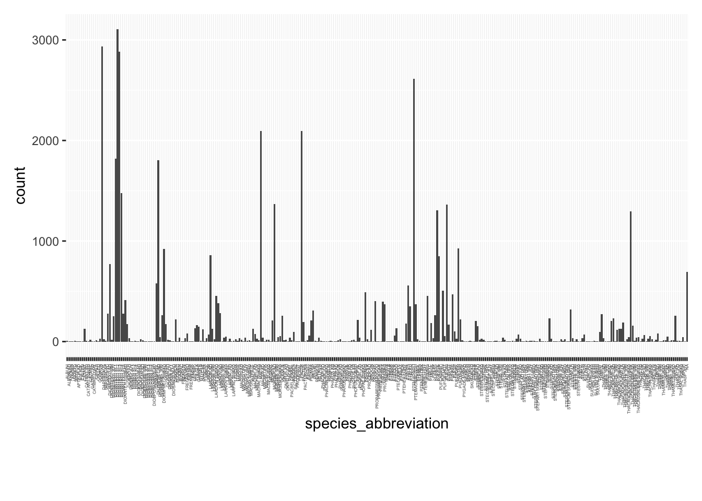
#Second - How many birds per record_id?ggplot(birds, aes(x =as.character(record_id))) +geom_bar() +theme(plot.margin =margin(t =10, r =10, b =50, l =10), axis.text.x =element_text(angle =90, vjust =0.5, hjust =1, size =3))
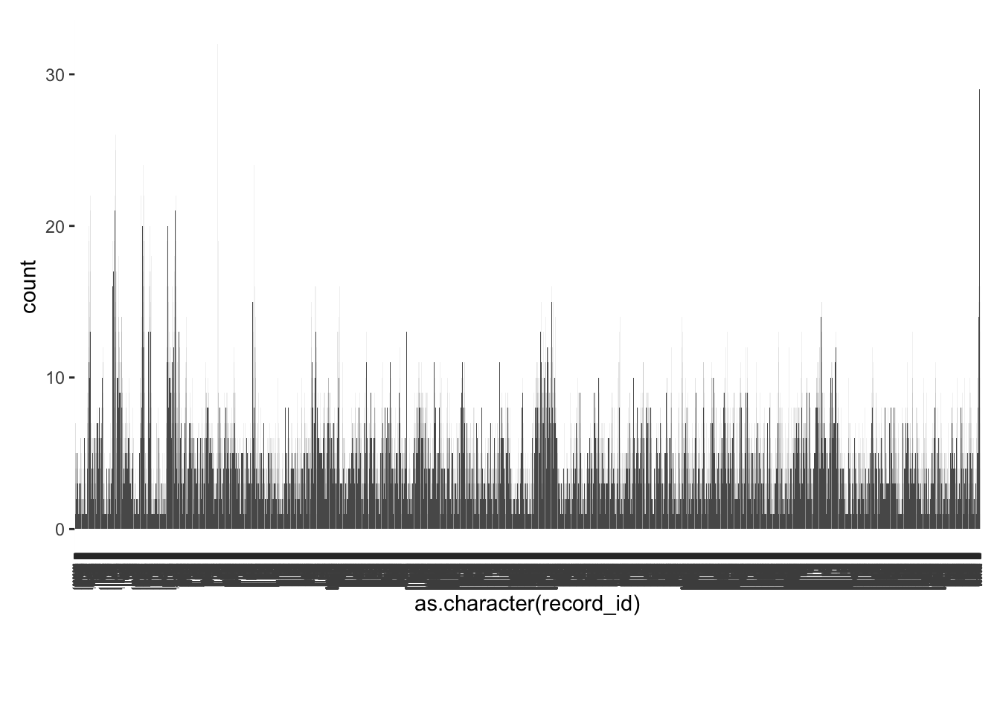
#Third - What are the most common bird behaviors?birds_long <- birds %>%pivot_longer(cols =c("feeding", "sitting_on_water", "sitting_on_ice", "sitting_on_ship", "in_hand", "flying_past", "accompanying", "following_ship"), names_to ="Category", values_to ="Value")ggplot(birds_long, aes(x = Category, fill = Value)) +geom_bar(position ="fill")
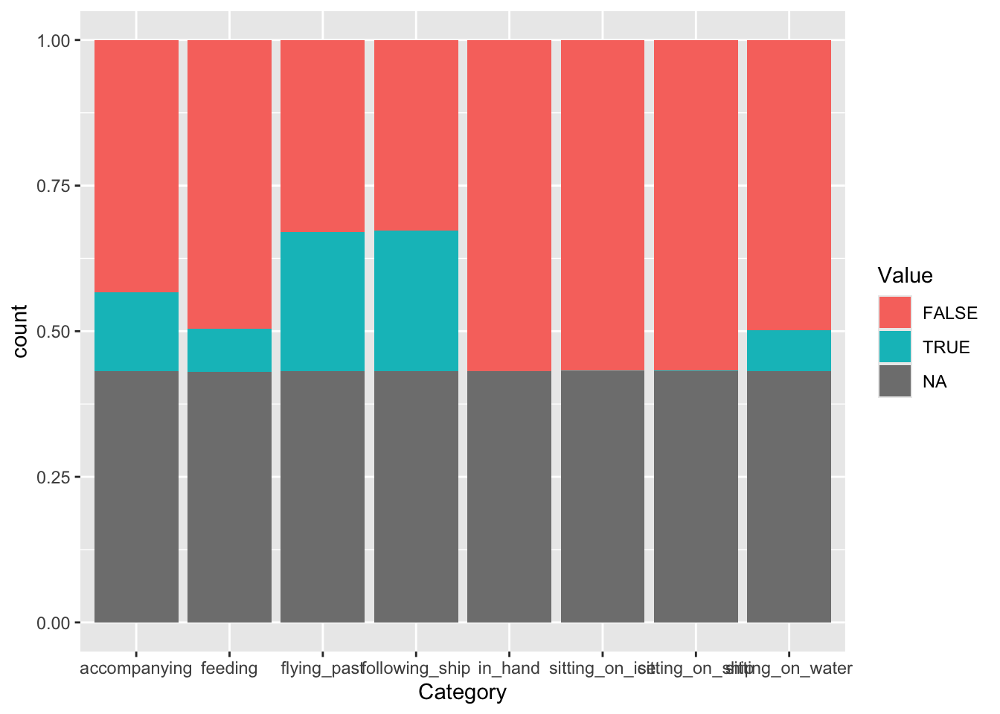
#Fourth - Do certain birds favor certain behaviors? birds_long_2 <- birds %>%pivot_longer(cols =c("n_feeding", "n_sitting_on_water", "n_sitting_on_ice", "n_flying_past", "n_accompanying", "n_following_ship"), names_to ="Category", values_to ="Value")ggplot(birds_long_2, aes(x = species_abbreviation, y = Value, fill = Category)) +geom_bar(stat ="identity", position ="fill") +ylab("Proportion") +theme(plot.margin =margin(t =10, r =10, b =50, l =10), axis.text.x =element_text(angle =90, vjust =0.5, hjust =1, size =3))
Warning: Removed 158688 rows containing missing values or values outside the scale range
(`geom_bar()`).
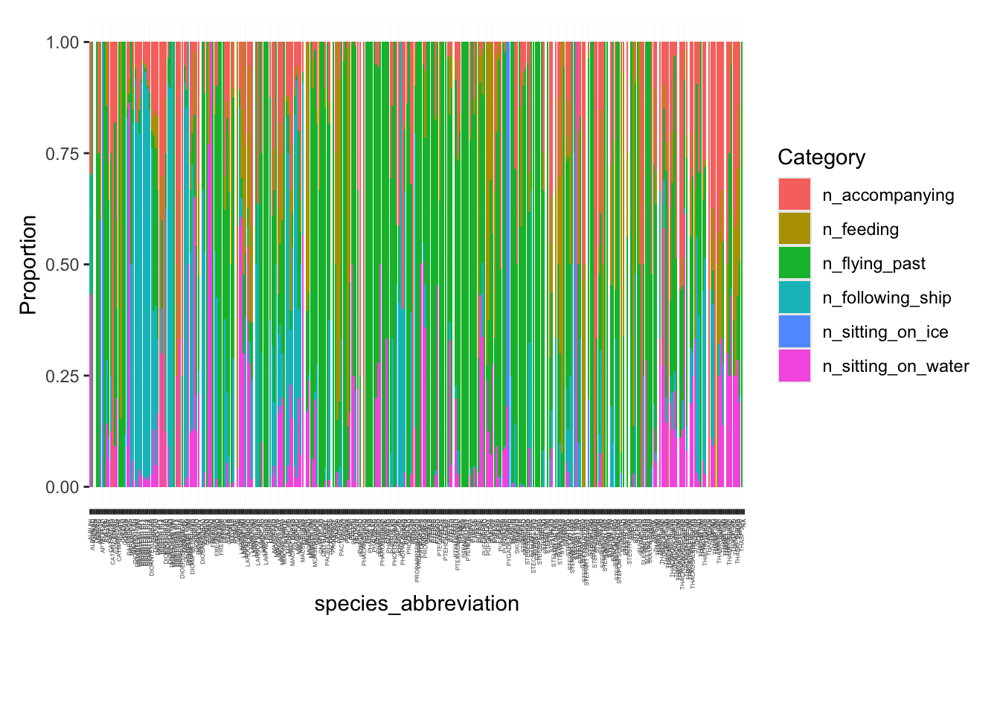
#These graphs are ugly, several columns are largely NAs, and I don't know the criteria exactly for each column
##Explore ships#First - How often is each wind speed class? ggplot(ships, aes(x = wind_speed_class)) +geom_bar()
Warning: Removed 4688 rows containing non-finite outside the scale range
(`stat_count()`).
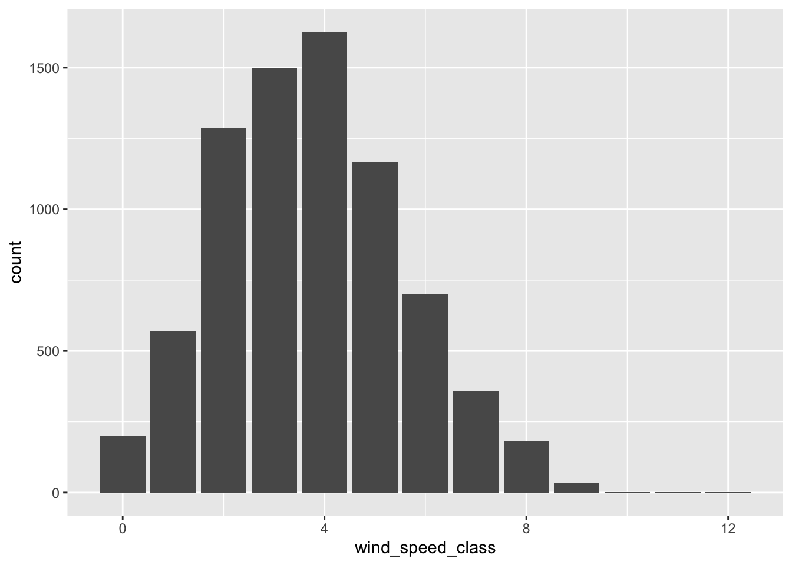
#Second - How often is each sea state class?ggplot(ships, aes(x = sea_state_class)) +geom_bar()
Warning: Removed 4751 rows containing non-finite outside the scale range
(`stat_count()`).
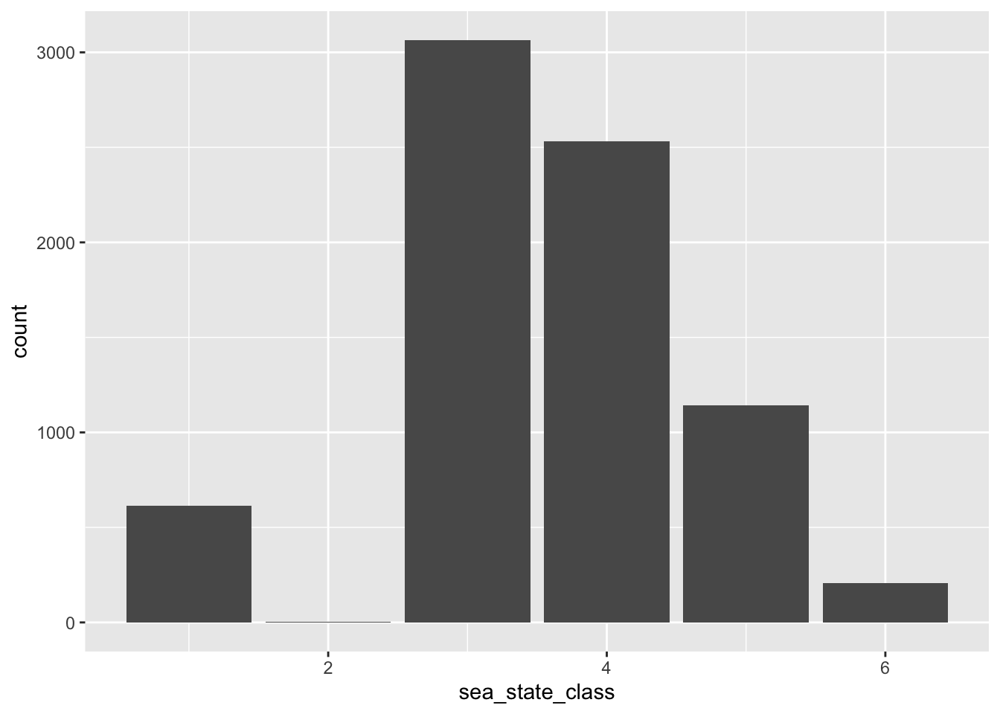
#Third - What is the most common ship speed?ggplot(ships, aes(x = speed)) +geom_bar()
Warning: Removed 4478 rows containing non-finite outside the scale range
(`stat_count()`).
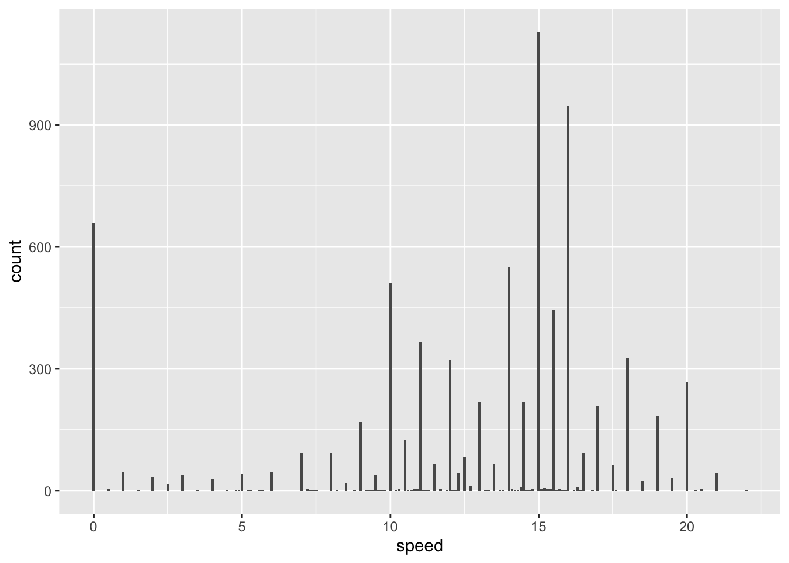
#Fourth - Is there a relationship between wind speed class and sea state class? - Rsquared = 0.606, very loose relationshipggplot(ships, aes(x = wind_speed_class, y = sea_state_class)) +geom_point() +geom_smooth(method ="lm")
`geom_smooth()` using formula = 'y ~ x'
Warning: Removed 4765 rows containing non-finite outside the scale range
(`stat_smooth()`).
Warning: Removed 4765 rows containing missing values or values outside the scale range
(`geom_point()`).
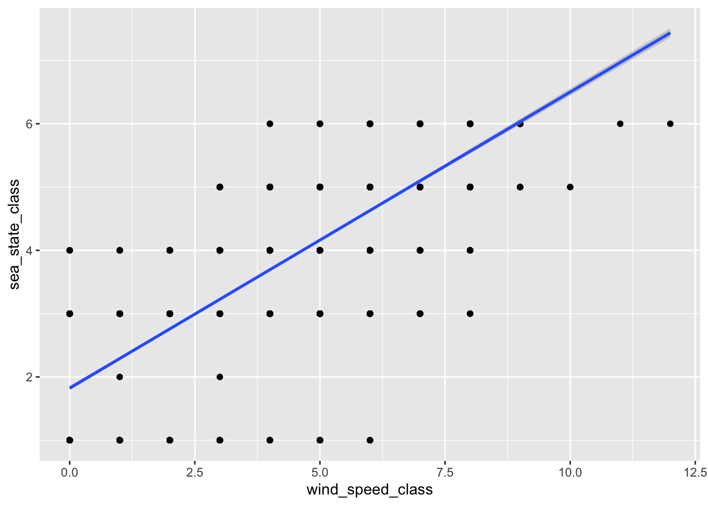
ships_4 <-lm(sea_state_class ~ wind_speed_class, data = ships)summary(ships_4)$r.squared
[1] 0.6064425
#Fifth - Is there one between wind speed class and ship speed? - 0.00357, so noggplot(ships, aes(x = wind_speed_class, y = speed)) +geom_point() +geom_smooth(method ="lm")
`geom_smooth()` using formula = 'y ~ x'
Warning: Removed 4923 rows containing non-finite outside the scale range
(`stat_smooth()`).
Warning: Removed 4923 rows containing missing values or values outside the scale range
(`geom_point()`).
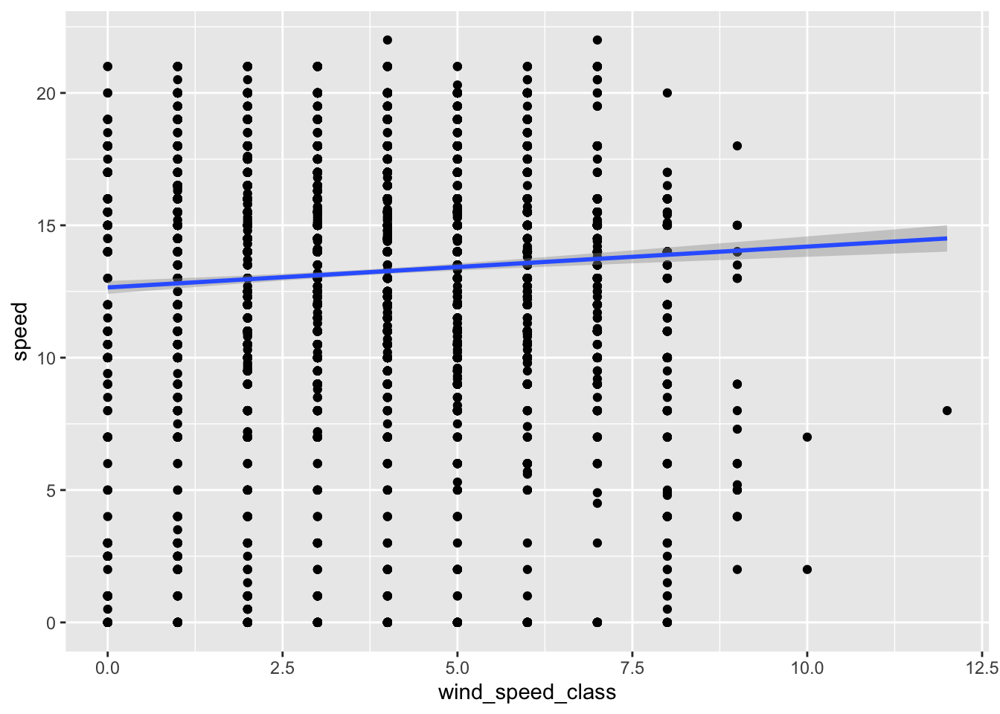
ships_5 <-lm(speed ~ wind_speed_class, data = ships)summary(ships_5)$r.squared
[1] 0.003571206
#Sixth - Is there one between sea state class and ship speed? - 0.0113, so noggplot(ships, aes(x = sea_state_class, y = speed)) +geom_point() +geom_smooth(method ="lm")
`geom_smooth()` using formula = 'y ~ x'
Warning: Removed 4933 rows containing non-finite outside the scale range
(`stat_smooth()`).
Warning: Removed 4933 rows containing missing values or values outside the scale range
(`geom_point()`).
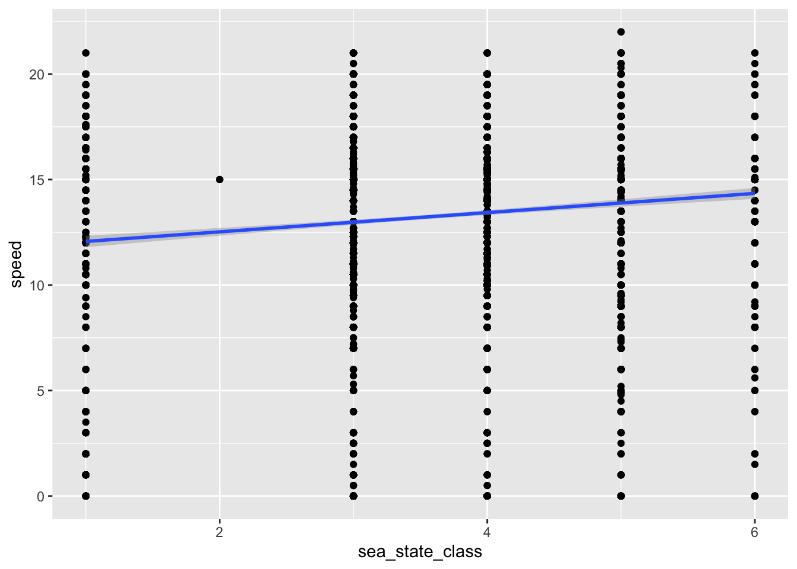
ships_6 <-lm(speed ~ sea_state_class, data = ships)summary(ships_6)$r.squared
[1] 0.01134334
#These graphs are not quite as ugly, but still several columns are largely NAs, and I don't know the criteria exactly for each column
Now for the question/hypothesis. Combining data from these different dataframes, I would most want to ask if ship df qualities could predict bird behaviour; however, there are a lot of NA values in the behavior, plus that would be multiple outcomes, so I think it would require each outcome to have its own set of models tested (?), so I think to stay more simplified, I will just stick to can ship speed, wind speed class, and sea state class be used to accurately predict the species of bird spotted? (species_abbreviation ~ sea_state_class + wind_speed_class + speed) (outcome ~ predictors) I predict that yes they can.
#Make new dataframe to make everything pretty and easy to follow, only the columns I really need in it birds_ships <- birds %>%select(record_id, count) %>%full_join(ships %>%select(record_id, speed, wind_speed_class, sea_state_class), by ="record_id")birds_ships <- birds_ships %>%group_by(record_id, speed, wind_speed_class, sea_state_class) %>%summarise(count =sum(count, na.rm =TRUE), .groups ='drop')##Determine seedrngseed <-1234##Split into train and test databirds_ships <- birds_ships %>%drop_na(count)birds_ships <- birds_ships %>%drop_na(wind_speed_class)birds_ships <- birds_ships %>%drop_na(sea_state_class)birds_ships <- birds_ships %>%drop_na(speed)birds_ships <- birds_ships %>%filter(count <quantile(count, 0.99, na.rm =TRUE))data_split <-initial_split(birds_ships, prop =0.75)train_data <-training(data_split)test_data <-testing(data_split)
Start now with the first of the three models. Starting with LASSO. Partway through the LASSO, I had to alter my question a little bit, new question is: can those same predictors predict the NUMBER of birds observed. I kept doing this multiple times and kept getting truly horribly fitting models, so I looked at the mean and standard deviations and found I had 22 data points that were more than 3 standard deviations from the mean, I considered them to be outliers, and removed them from the dataset before splitting into test and training data.
##Set it up - first got an error that it couldn't be character if i used linear_reg, then error that couldn't be factor if i used linear_reg, then got error that there are 1 or 0 values that I have to get rid oflasso_birds_ships <-linear_reg(penalty =0.1, mixture =1) %>%set_engine("glmnet")lasso_b_s_fit <- lasso_birds_ships %>%fit(count ~ speed + wind_speed_class + sea_state_class, data = train_data)tidy(lasso_b_s_fit)
##Model Predictionspredict_bs1 <-predict(lasso_b_s_fit, new_data = train_data) %>%bind_cols(train_data %>%select(count))metrics_bs1 <- predict_bs1 %>%metrics(truth = count, estimate = .pred)print(metrics_bs1) #rmse is 98.7, thats pretty good? but rsquared is 0.00622
# A tibble: 3 × 3
.metric .estimator .estimate
<chr> <chr> <dbl>
1 rmse standard 95.3
2 rsq standard 0.00245
3 mae standard 37.5
##Set up for CVset.seed(rngseed)cv_folds <-vfold_cv(train_data, v =10)##Do the CV? - Hopefully to improve the metrics with training? recipe_all <-recipe(count ~ speed + wind_speed_class + sea_state_class, data = train_data)lasso_workflow_bs1 <-workflow() %>%add_recipe(recipe_all) %>%add_model(lasso_birds_ships)lasso_grid_bs1 <-tibble(penalty =10^seq(-5, 2, length.out =50))lasso_bs1_tune <-linear_reg(penalty =tune(), mixture =1) %>%set_engine("glmnet")lasso_tune_bs1 <-workflow() %>%add_recipe(recipe_all) %>%add_model(lasso_bs1_tune)lasso_cv_bs1 <-tune_grid(lasso_tune_bs1, resamples = cv_folds, grid = lasso_grid_bs1, metrics =metric_set(yardstick::rmse))collect_metrics(lasso_cv_bs1) #rmse is 97.1 across the board, looks like
# A tibble: 50 × 7
penalty .metric .estimator mean n std_err .config
<dbl> <chr> <chr> <dbl> <int> <dbl> <chr>
1 0.00001 rmse standard 93.3 10 6.55 pre0_mod01_post0
2 0.0000139 rmse standard 93.3 10 6.55 pre0_mod02_post0
3 0.0000193 rmse standard 93.3 10 6.55 pre0_mod03_post0
4 0.0000268 rmse standard 93.3 10 6.55 pre0_mod04_post0
5 0.0000373 rmse standard 93.3 10 6.55 pre0_mod05_post0
6 0.0000518 rmse standard 93.3 10 6.55 pre0_mod06_post0
7 0.0000720 rmse standard 93.3 10 6.55 pre0_mod07_post0
8 0.0001 rmse standard 93.3 10 6.55 pre0_mod08_post0
9 0.000139 rmse standard 93.3 10 6.55 pre0_mod09_post0
10 0.000193 rmse standard 93.3 10 6.55 pre0_mod10_post0
# ℹ 40 more rows
##Pick the best version from CV best_cv_bs1 <-select_best(lasso_cv_bs1, metric ="rmse")final_lasso_bs1 <-finalize_workflow(lasso_workflow_bs1, best_cv_bs1)lasso_best_bs1 <-fit(final_lasso_bs1, data = train_data)train_predict_bs1 <-predict(lasso_best_bs1, new_data = train_data) %>%bind_cols(train_data %>%select(count)) %>%mutate(dataset ="Train")metrics_train_bs1 <- train_predict_bs1 %>%metrics(truth = count, estimate = .pred)print(metrics_train_bs1) #rmse 98.7
# A tibble: 3 × 3
.metric .estimator .estimate
<chr> <chr> <dbl>
1 rmse standard 95.3
2 rsq standard 0.00245
3 mae standard 37.5
##Evaluate with test datatest_predict_bs1 <-predict(lasso_best_bs1, new_data = test_data) %>%bind_cols(test_data) %>%mutate(dataset ="Test")metrics_test_bs1 <- test_predict_bs1 %>%metrics(truth = count, estimate = .pred)print(metrics_test_bs1) #rmse is 91.1, but rsq is 0.000129
# A tibble: 3 × 3
.metric .estimator .estimate
<chr> <chr> <dbl>
1 rmse standard 101.
2 rsq standard 0.00784
3 mae standard 38.9
##Plot predicted vs observedcombined_predict_bs1 <-bind_rows(train_predict_bs1, test_predict_bs1)ggplot(combined_predict_bs1, aes(x = count, y = .pred, color = dataset, shape = dataset)) +geom_point(size =2, alpha =0.7) +coord_cartesian(xlim =c(0, 1250), ylim =c(0, 75)) +labs(x ="Observed values", y ="Predicted values", title ="Predicted vs Observed: Training and Test Data")
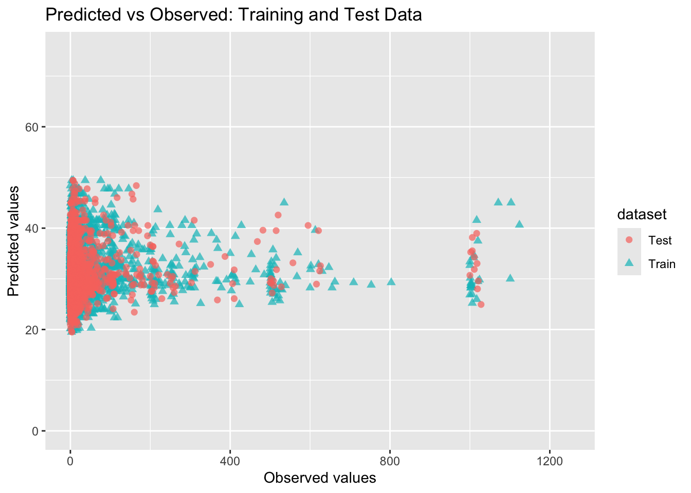
I mean, the test vs train points occupy similar space, but the plot is so so flat, predicted and observed are so different, itis nowhere near a nice diagonal line. Whatever, I’ve spent too time on this and now I’m moving on to the next model.
Random forest model is up next:
##Set it up, do initial modelingrf_bs2 <-rand_forest() %>%set_engine("ranger", seed = rngseed) %>%set_mode("regression")rf_bs2_fit <- rf_bs2 %>%fit(count ~ speed + wind_speed_class + sea_state_class, data = train_data)predict_bs2 <-predict(rf_bs2_fit, new_data = train_data) %>%bind_cols(train_data %>%select(count))metrics_bs2 <- predict_bs2 %>%metrics(truth = count, estimate = .pred) print(metrics_bs2) #rmse is 96, rsq is 0.0858, so again bad
# A tibble: 3 × 3
.metric .estimator .estimate
<chr> <chr> <dbl>
1 rmse standard 93.0
2 rsq standard 0.0761
3 mae standard 36.5
→ A | warning: ! 4 columns were requested but there were 3 predictors in the data.
ℹ 3 predictors will be used.
There were issues with some computations A: x1
→ B | warning: ! 5 columns were requested but there were 3 predictors in the data.
ℹ 3 predictors will be used.
There were issues with some computations A: x1
→ C | warning: ! 6 columns were requested but there were 3 predictors in the data.
ℹ 3 predictors will be used.
There were issues with some computations A: x1
→ D | warning: ! 7 columns were requested but there were 3 predictors in the data.
ℹ 3 predictors will be used.
There were issues with some computations A: x1
There were issues with some computations A: x6 B: x4 C: x3 D: x2
There were issues with some computations A: x15 B: x12 C: x10 D: x8
There were issues with some computations A: x24 B: x21 C: x18 D: x15
There were issues with some computations A: x40 B: x36 C: x32 D: x28
There were issues with some computations A: x60 B: x55 C: x50 D: x45
There were issues with some computations A: x84 B: x78 C: x72 D: x66
There were issues with some computations A: x112 B: x105 C: x98 D: x91
There were issues with some computations A: x115 B: x107 C: x99 D: x91
There were issues with some computations A: x122 B: x113 C: x104 D: x95
There were issues with some computations A: x130 B: x120 C: x110 D: x101
There were issues with some computations A: x144 B: x133 C: x122 D: x112
There were issues with some computations A: x162 B: x150 C: x138 D: x127
There were issues with some computations A: x184 B: x171 C: x158 D: x146
There were issues with some computations A: x210 B: x196 C: x182 D: x169
There were issues with some computations A: x225 B: x210 C: x196 D: x182
There were issues with some computations A: x230 B: x214 C: x199 D: x184
There were issues with some computations A: x239 B: x222 C: x206 D: x190
There were issues with some computations A: x252 B: x234 C: x217 D: x200
There were issues with some computations A: x269 B: x250 C: x232 D: x214
There were issues with some computations A: x290 B: x270 C: x251 D: x232
There were issues with some computations A: x315 B: x294 C: x274 D: x254
There were issues with some computations A: x337 B: x315 C: x294 D: x273
There were issues with some computations A: x342 B: x319 C: x297 D: x275
There were issues with some computations A: x351 B: x327 C: x304 D: x281
There were issues with some computations A: x360 B: x336 C: x312 D: x288
There were issues with some computations A: x376 B: x351 C: x326 D: x301
There were issues with some computations A: x396 B: x370 C: x344 D: x318
There were issues with some computations A: x420 B: x393 C: x366 D: x339
There were issues with some computations A: x448 B: x420 C: x392 D: x364
There were issues with some computations A: x451 B: x422 C: x393 D: x364
There were issues with some computations A: x456 B: x426 C: x396 D: x367
There were issues with some computations A: x466 B: x435 C: x404 D: x374
There were issues with some computations A: x480 B: x448 C: x416 D: x385
There were issues with some computations A: x493 B: x460 C: x428 D: x396
There were issues with some computations A: x514 B: x480 C: x447 D: x414
There were issues with some computations A: x539 B: x504 C: x470 D: x436
There were issues with some computations A: x561 B: x525 C: x490 D: x455
There were issues with some computations A: x566 B: x529 C: x493 D: x457
There were issues with some computations A: x575 B: x537 C: x500 D: x463
There were issues with some computations A: x588 B: x549 C: x511 D: x473
There were issues with some computations A: x605 B: x565 C: x526 D: x487
There were issues with some computations A: x626 B: x585 C: x545 D: x505
There were issues with some computations A: x651 B: x609 C: x568 D: x527
There were issues with some computations A: x673 B: x630 C: x588 D: x546
There were issues with some computations A: x676 B: x633 C: x590 D: x547
There were issues with some computations A: x682 B: x638 C: x594 D: x550
There were issues with some computations A: x690 B: x645 C: x600 D: x556
There were issues with some computations A: x700 B: x654 C: x609 D: x564
There were issues with some computations A: x717 B: x670 C: x624 D: x578
There were issues with some computations A: x738 B: x690 C: x643 D: x596
There were issues with some computations A: x763 B: x714 C: x666 D: x618
There were issues with some computations A: x785 B: x735 C: x686 D: x637
There were issues with some computations A: x790 B: x739 C: x689 D: x639
There were issues with some computations A: x796 B: x745 C: x694 D: x643
There were issues with some computations A: x808 B: x756 C: x704 D: x652
There were issues with some computations A: x820 B: x767 C: x714 D: x661
There were issues with some computations A: x839 B: x785 C: x731 D: x677
There were issues with some computations A: x862 B: x807 C: x752 D: x697
There were issues with some computations A: x882 B: x826 C: x770 D: x715
There were issues with some computations A: x898 B: x841 C: x784 D: x728
There were issues with some computations A: x902 B: x844 C: x787 D: x730
There were issues with some computations A: x911 B: x852 C: x794 D: x736
There were issues with some computations A: x924 B: x864 C: x805 D: x746
There were issues with some computations A: x941 B: x880 C: x820 D: x760
There were issues with some computations A: x962 B: x900 C: x839 D: x778
There were issues with some computations A: x980 B: x918 C: x856 D: x794
There were issues with some computations A: x1008 B: x945 C: x882 D: x8…
There were issues with some computations A: x1011 B: x947 C: x883 D: x8…
There were issues with some computations A: x1018 B: x953 C: x888 D: x8…
There were issues with some computations A: x1026 B: x960 C: x894 D: x8…
There were issues with some computations A: x1036 B: x969 C: x903 D: x8…
There were issues with some computations A: x1053 B: x985 C: x918 D: x8…
There were issues with some computations A: x1074 B: x1005 C: x937 D: x…
There were issues with some computations A: x1099 B: x1029 C: x960 D: x…
There were issues with some computations A: x1120 B: x1050 C: x980 D: x…
collect_metrics(rf_cv_bs2) #Looks like 96.9 - 98.9 rmse range?
# A tibble: 49 × 8
mtry min_n .metric .estimator mean n std_err .config
<int> <int> <chr> <chr> <dbl> <int> <dbl> <chr>
1 1 1 rmse standard 93.1 10 6.36 pre0_mod01_post0
2 1 4 rmse standard 93.1 10 6.37 pre0_mod02_post0
3 1 7 rmse standard 93.1 10 6.38 pre0_mod03_post0
4 1 11 rmse standard 93.1 10 6.38 pre0_mod04_post0
5 1 14 rmse standard 93.1 10 6.38 pre0_mod05_post0
6 1 17 rmse standard 93.1 10 6.40 pre0_mod06_post0
7 1 21 rmse standard 93.1 10 6.40 pre0_mod07_post0
8 2 1 rmse standard 95.3 10 5.83 pre0_mod08_post0
9 2 4 rmse standard 95.1 10 5.85 pre0_mod09_post0
10 2 7 rmse standard 94.9 10 5.87 pre0_mod10_post0
# ℹ 39 more rows
##Pick the best version from CV best_cv_bs2 <-select_best(rf_cv_bs2, metric ="rmse")final_rf_bs2 <-finalize_workflow(rf_bs2_tune_wf, best_cv_bs2)rf_best_bs2 <-fit(final_rf_bs2, data = train_data)train_predict_bs2 <-predict(rf_best_bs2, new_data = train_data) %>%bind_cols(train_data %>%select(count)) %>%mutate(dataset ="Train")metrics_train_bs2 <- train_predict_bs2 %>%metrics(truth = count, estimate = .pred)print(metrics_train_bs2) #rmse 96.1, rs1 0.0848
# A tibble: 3 × 3
.metric .estimator .estimate
<chr> <chr> <dbl>
1 rmse standard 93.2
2 rsq standard 0.0690
3 mae standard 36.6
##Evaluate with test datatest_predict_bs2 <-predict(rf_best_bs2, new_data = test_data) %>%bind_cols(test_data) %>%mutate(dataset ="Test")metrics_test_bs2 <- test_predict_bs2 %>%metrics(truth = count, estimate = .pred)print(metrics_test_bs2) #rmse is 91.1 (why is this identical to the last one whaaaattt)
# A tibble: 3 × 3
.metric .estimator .estimate
<chr> <chr> <dbl>
1 rmse standard 101.
2 rsq standard 0.00757
3 mae standard 38.7
##Plot predicted vs observedcombined_predict_bs2 <-bind_rows(train_predict_bs2, test_predict_bs2)ggplot(combined_predict_bs2, aes(x = count, y = .pred, color = dataset, shape = dataset)) +geom_point(size =2, alpha =0.7) +coord_cartesian(xlim =c(0, 1250), ylim =c(0, 300)) +labs(x ="Observed values", y ="Predicted values", title ="Predicted vs Observed: Training and Test Data")
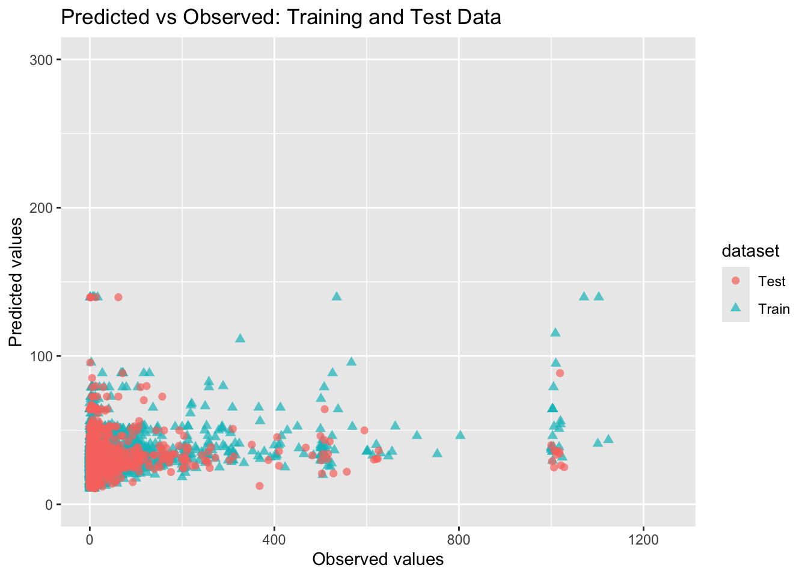
This looks really the same as the last one, really. The test vs train points occupy similar space, but the plot is so so flat, predicted and observed are so different, it is nowhere near a nice diagonal line. I’m thinking probably this means I asked a horrible question and speed + wind_speed_class + sea_state_class cannot be used to predict number of birds. Which I guess makes sense, I just thought maybe on a day which horrible weather and rough seas, they might see fewer birds because they don’t want to deal with it all? But I guess not.
One more horrible model to get to the homework requirements, did SVM, had to google the initial coding/requirements, then followed the same basic set up as before
##Set it up, do initial modelingsvm_bs3 <-svm_rbf(cost =1, rbf_sigma =0.01) %>%set_engine("kernlab") %>%set_mode("regression")svm_bs3_fit <- svm_bs3 %>%fit(count ~ speed + wind_speed_class + sea_state_class, data = train_data)predict_svm_bs3 <-predict(svm_bs3_fit, new_data = train_data) %>%bind_cols(train_data %>%select(count))metrics_svm_bs3 <- predict_svm_bs3 %>%metrics(truth = count, estimate = .pred)print(metrics_svm_bs3) #rmse is 101, rsq is 0.00596
# A tibble: 3 × 3
.metric .estimator .estimate
<chr> <chr> <dbl>
1 rmse standard 97.1
2 rsq standard 0.00172
3 mae standard 28.0
#Do CVset.seed(rngseed)cv_folds <-vfold_cv(train_data, v =10)recipe_svm <-recipe(count ~ speed + wind_speed_class + sea_state_class, data = train_data) %>%step_normalize(all_numeric_predictors()) #google said this was an important step to include for svmsvm_bs3_tune <-svm_rbf(cost =tune(), rbf_sigma =tune()) %>%set_engine("kernlab") %>%set_mode("regression")svm_wf_bs3 <-workflow() %>%add_recipe(recipe_svm) %>%add_model(svm_bs3_tune)svm_grid_bs3 <-grid_regular(cost(range =c(-3, 3)), rbf_sigma(range =c(-3, 0)),levels =5)svm_cv_bs3 <-tune_grid(svm_wf_bs3, resamples = cv_folds, grid = svm_grid_bs3, metrics =metric_set(yardstick::rmse))collect_metrics(svm_cv_bs3) #rmse 99.6 across the board
# A tibble: 25 × 8
cost rbf_sigma .metric .estimator mean n std_err .config
<dbl> <dbl> <chr> <chr> <dbl> <int> <dbl> <chr>
1 0.125 0.001 rmse standard 95.0 10 6.78 pre0_mod01_post0
2 0.125 0.00562 rmse standard 95.0 10 6.78 pre0_mod02_post0
3 0.125 0.0316 rmse standard 95.0 10 6.79 pre0_mod03_post0
4 0.125 0.178 rmse standard 94.9 10 6.80 pre0_mod04_post0
5 0.125 1 rmse standard 94.9 10 6.80 pre0_mod05_post0
6 0.354 0.001 rmse standard 95.0 10 6.78 pre0_mod06_post0
7 0.354 0.00562 rmse standard 95.0 10 6.78 pre0_mod07_post0
8 0.354 0.0316 rmse standard 95.0 10 6.79 pre0_mod08_post0
9 0.354 0.178 rmse standard 94.9 10 6.80 pre0_mod09_post0
10 0.354 1 rmse standard 94.9 10 6.81 pre0_mod10_post0
# ℹ 15 more rows
# A tibble: 3 × 3
.metric .estimator .estimate
<chr> <chr> <dbl>
1 rmse standard 103.
2 rsq standard 0.00742
3 mae standard 29.4
##Plot predicted vs observedcombined_predict_bs3 <-bind_rows(train_predict_bs3, test_predict_bs3)ggplot(combined_predict_bs3, aes(x = count, y = .pred, color = dataset, shape = dataset)) +geom_point(size =2, alpha =0.7) +coord_cartesian(xlim =c(0, 1250), ylim =c(0, 300)) +labs(x ="Observed values", y ="Predicted values", title ="Predicted vs Observed: Training and Test Data")
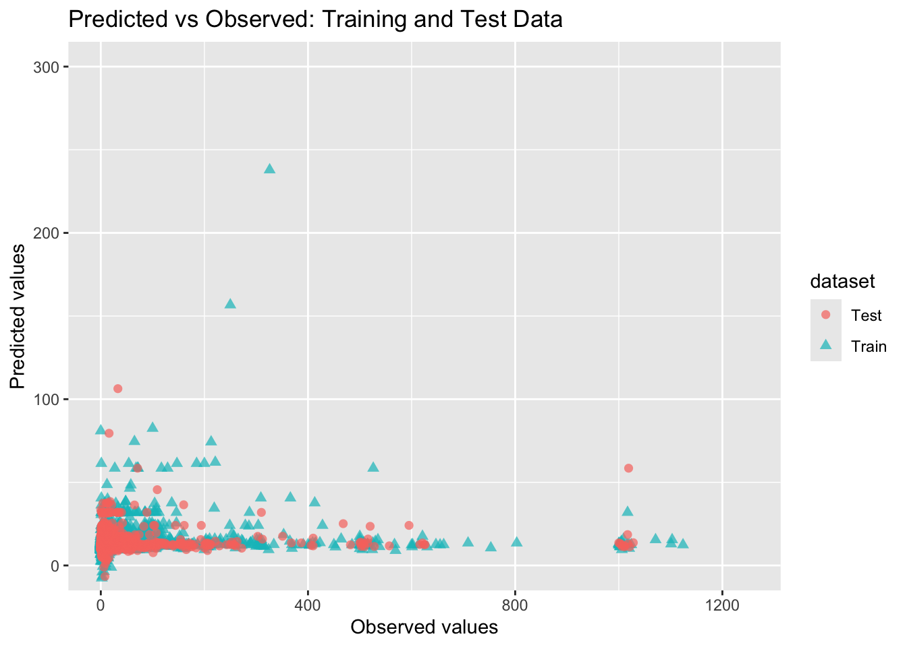
Again, horrible. I think the fact that all three off these are horrible either means that a - I have no idea what I’m doing whatsoever, or b - these are really horrible predictors of this outcome. The next part I think is to make a summary table of my “findings”, but really each of these is bad and I struggle to pick out if one is really worse than the others.